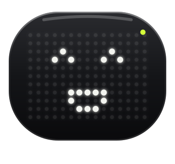

A desktop pet for your Mac
A desktop pet
that does
real work.
Kibu sits on your desktop and takes requests in plain English. Find a file, sort a messy folder, set a reminder. It shows you its plan, does the work, and can undo it.
Free and open source. Like the idea? Star Kibu on GitHub
“Organize my Downloads.”
- Runs on
- macOS 14 or later
- Built for
- Apple silicon Macs
- Needs an agent
- Claude Code, Codex or OpenCode
- Price
- Free and open source
What it does
Say it in plain words. Watch it get done.
Kibu works with the files and apps already on your Mac. Here is what you can ask for.
Files
Find a document from whatever you remember about it. Sort a crowded folder into tidy groups. Rename fifty files to one pattern. You approve the changes before anything moves.
Try sayingOrganize my Downloads folder
Your day
Add events, set reminders and take notes in the Calendar, Reminders and Notes apps you already use. Emails are written as drafts, so you always press Send yourself.
Try sayingRemind me to call Mom tomorrow at 7
The web
Summarize the page in front of you, open tabs, or work through a site step by step while you watch. Kibu asks before it sends, posts or buys anything.
Try sayingSummarize this page
Other apps
Kibu can read what is on screen, press buttons and use the text you have selected, so it can explain an error or finish a job in another app.
Try sayingExplain the error I just selected
Notes and memory
Keep notes, tasks and a focus timer with Kibu. Tell it something once, such as which calendar your meetings go on, and it remembers. All of it stays on your Mac.
Try sayingStart a 25 minute focus timer
Good company
Kibu is a pet, too. Drag it around, drop files on it, make it dance or let it nap. If it ever gets in the way, tuck it into the menu bar.
Open it from anywhere⌥ OptionSpace
You stay in charge
Nothing happens behind your back.
Kibu acts only when you ask. It tells you what it is about to do, and it always leaves you a way out.
Preview first
File changes are listed before anything moves. Approve them, or don’t.
Pause or stop
Pause, resume or stop a task at any moment. ⌘⇧Esc stops Kibu immediately.
Undo
Moved files, renames and new folders can be put back. So can the events, reminders and notes Kibu created.
Your mouse stays yours
Kibu never moves your pointer or types on your keyboard. If a step needs a click, it tells you where.
Nothing sent without you
Emails stay drafts. Kibu asks before anything is sent, posted or bought.
Limits on every task
Each task has a cap on steps, time and spending, checked before every step.
Bring your own agent
Kibu does the work. An agent does the thinking.
Kibu does not come with an AI model. For open-ended requests it plans with an agent you already have, and you choose which one during the one-minute setup.
- Claude Code, Codex or OpenCodeIf one is installed on your Mac, Kibu finds it and uses the login it already has. There is nothing to paste.
- Or an Anthropic API keyKibu plans with Claude Sonnet 5.5 and Anthropic bills you for what you use. The key is stored in your macOS Keychain.
- The agent suggests. Kibu checks.Every step the agent proposes is checked by Kibu’s own code against what you have allowed before it runs.
- No agent yet?Finding, tidying and renaming files, reminders, calendar, notes and timers all work without one.
- Jev is optionalA separate TypeSafe API key enables quick decisions, such as grouping files and choosing naming patterns. Without it, Kibu uses local rules. TypeSafe usage is billed separately.
Pick what I plan with. You can change it any time in Settings.
Install
One command in Terminal.
Kibu is built on your own Mac from its source code. Here is what you need first.
- A Mac with Apple silicon, M1 or later
- macOS 14 Sonoma or later
- Node.js 22 or later, from nodejs.org
- Apple’s command line tools. Run
xcode-select --installif you don’t have them - An agent: Claude Code, Codex, OpenCode or an Anthropic API key
git clone https://github.com/madhurjyadc/kibu.git && cd kibu && npm install && npm run app
- Paste the commandIt builds Kibu.app on your Mac, puts it in Applications and opens it.
- Take the short tourKibu shows what it can do and asks for each permission only when you tap Allow.
- Press ⌥ SpaceKibu opens from anywhere. You can also click its face in the menu bar.
To update later, run git pull && npm install && npm run app in the kibu folder. The full guide is in the README on GitHub.
Installed Kibu? Give it a star.
Kibu is free and open source. A star on GitHub takes two seconds, and it is how other people find Kibu.
Permissions and privacy
You decide what Kibu can reach.
Each permission is requested on its own, only when you tap Allow, and you can skip any of them.
What Kibu asks for
- Desktop, Documents and DownloadsTo find, tidy and rename your files.
- Calendar, Reminders, Notes and MailTo add events, set reminders, take notes and draft emails.
- Your browserTo read the page you are on. Safari, Chrome, Arc, Brave and Edge are supported.
- Accessibility and Screen RecordingTo read windows and press buttons in other apps.
- NotificationsFor reminders and timers.
What stays private
- Saved on your MacTasks, history and memories live in a local database, not on a server.
- Only what a step needs is sharedAnd only with the agent you chose. Kibu uses cloud models, so it is not an offline app.
- No background watchingKibu does not index your files or take continuous screenshots.
- Some places stay closedSystem folders, SSH keys and your Keychain cannot be opened, whoever asks.
- No secrets in memoryKibu refuses to remember passwords, codes, keys and card numbers.
Off the clock
Stay. Play a little.
Pet me. Drag me. We’re friends now.
Questions
Good to know before you install.
The short answers. The long ones are in the README.
Which Macs does Kibu run on?
Any Mac with Apple silicon (M1 or later) running macOS 14 Sonoma or later. Intel Macs, Windows and Linux are not supported.
What does “needs an agent” mean?
Kibu can act on your Mac, but it does not include an AI model. For open-ended requests it borrows the thinking of an agent you already use: Claude Code, Codex or OpenCode on your Mac, or an Anthropic API key. Without one, Kibu still finds, tidies and renames files and handles reminders, calendar, notes and timers.
What does it cost?
Kibu is free. There is no account and no subscription. With Claude Code, Codex or OpenCode it uses the plan you already have. With an Anthropic API key, Anthropic bills you for what you use, and each task stops at $1.50 unless you raise the limit.
Is there a .dmg to download?
Not yet. For now you build Kibu from source with one command. An app built on your own Mac opens without a security warning from macOS, and you can read every line of it first.
Will Kibu take over my mouse or keyboard?
No. Kibu never moves your pointer or types for you. It works through files, app scripting and macOS Accessibility. If something can only be done with a click, it tells you what to click.
Can it send email or buy things?
Not on its own. An email is only ever a draft for you to send, and Kibu asks before anything is sent, posted or bought.
Where does my data go?
Tasks, history and memories are saved in a database on your Mac. Kibu uses cloud models, so it is not an offline app: the details a step needs are sent to the agent you chose, and nothing more.
How do I update or remove it?
To update, run git pull && npm install && npm run app in the kibu folder. To remove it, quit Kibu and delete Kibu.app from Applications. Its data lives in ~/Library/Application Support/Kibu.
Is Kibu finished?
No. This is an early release, version 0.1, and you should expect rough edges. The repository lists exactly what has been tested and what has not.
Your desktop could use some company.
macOS 14 or later · Apple silicon · Bring your own agent
Not installing today? A star still helps. Thank you.